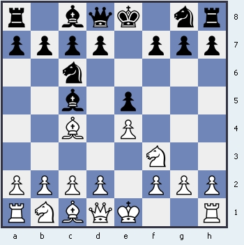

Итальянская партия

Итальянская партия - отличный выбор для новичка. Дебют, который начал активно применяться еще в XVI и не утратил актуальностьи до сегодняшних
Назад На главную
дней. Имеет как активные ответвления, связанные с продвижением пешки d4 после хода с3 или еще более динамичный вариант - 4.b4!? - гамбит
Эванса, так и "тихий" вариант - d3, являющийся наиболее популярным ответвлением среди гроссмейстеров. Входит в репертуар всех гроссмейтеров
из топ-10.